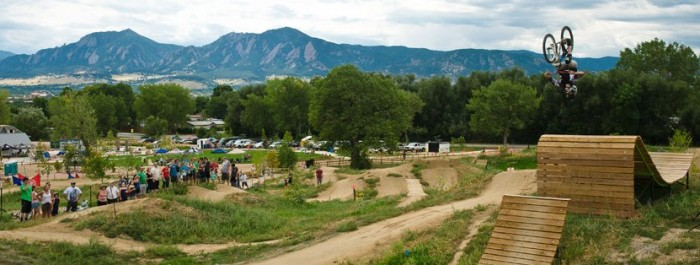

The wide-open rolling terrain of the Yampa Valley has long been home to Steamboat's ranching legacy. Pedal our roads and you will be rewarded with miles of great vistas. Popular routes include everything from 20-mile out and backs, to 40-mile circuits, to mixed dirt touring, to epic hill climbs and century rides. Road rides vary in mileage so you’ll have options for a quick cruise, or an all- day crusher.

Crested Butte and the Gunnison Valley offer an expansive mountain-biking experience like no other. The area’s more than 750 miles of mountain-biking trails lead to wildflower-peppered valleys, unparalleled mountain vistas and multi-hued desert expanses.

The Boulder Valmont Bike Park is a 42-acre, natural surface cycling terrain park offering diverse amenities for several riding styles and abilities. The park is free and open daily from dawn to dusk.